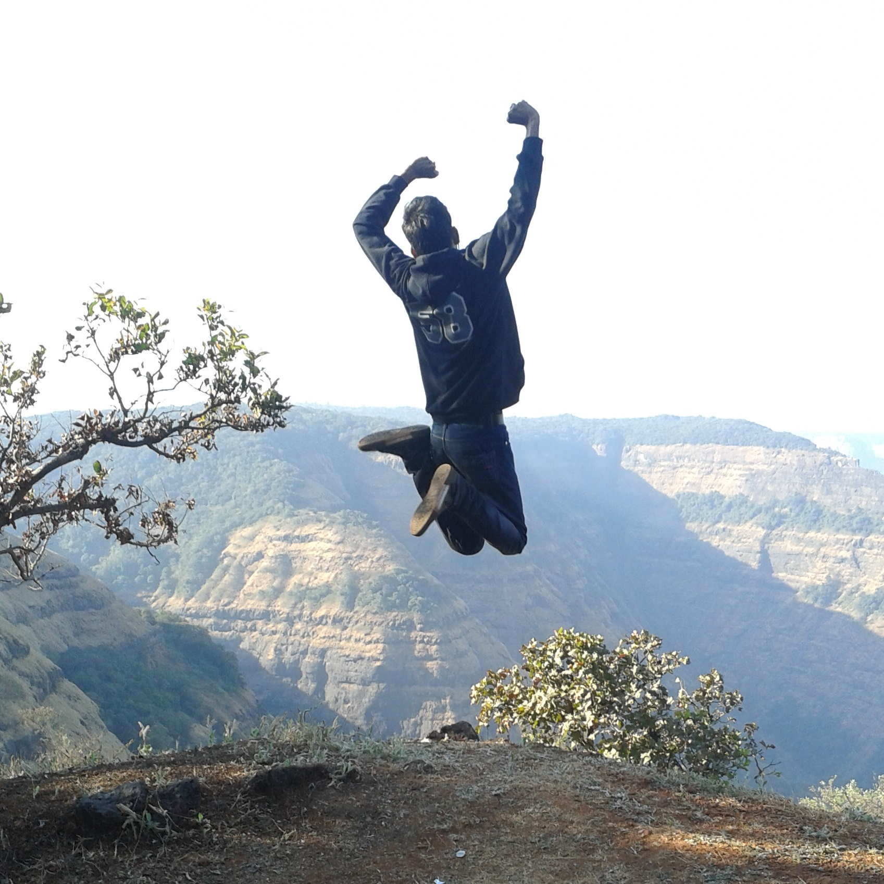

Hello! I am Praveen Agrawal. I hail from Dumka, a small town in Jharkhand. I came into existence on 18th October, 1993 and completed my 10th class ICSE exam from St. Joseph's School, Dumka. I had secured a total of 93.86% marks in the 10th board exams.
Thereafter, I moved on to Bokaro for +2 studies and IIT-JEE coaching. I had studied in Delhi Public School, Bokaro Steel City during my 11th and 12th class. I did my IIT JEE coaching from Brilliant Tutorials in class 11th and Everonn Toppers in class 12th. I obtained a total of 94.4% in my CBSE class 12th board exams. I qualified IIT JEE 2012 with an AIR of 1453.
In 2012 I joined the Chemical Engineering Department at IIT Bombay. At the end of the first year I got a branch change and am currently in my fourth semester of Electrical Engineering as a dual degree student and my specialisation is in Communications and Signal Processing. Life at IIT Bombay is way beyond imagination. Time here gets an additional pair of wings and flies faster than anywhere else. I really like the campus life.
Apart from academics I also like to be involved in some of the extra curricular activities that goes on in the campus. Debating, dramatics and fine arts are the main genres that I am interested in. You can find some of my art works in this link.
I am an adventurous and travel loving person, fond of visiting and exploring new places, so if you are planning one then do call me too. I never leave a chance of going to a new place for a holiday whenever I get one. I have done valley crossing, river crossing, rafting, wall climbing and few other adventure sports and am surely keen on doing many more in the days to come. I have conquered a good number of peaks in different locations. This includes the highest and toughest climbs of the Sahyadris. My favourite pass time places are sea shores and lake sides.
In addition to these I am also very fond of eating and love to explore restuarants with good food. I am also a great lover of nature and really enjoy sitting alone and enjoying the beauty of nature. Watching the moon, staring at the starry night sky, finding shapes in the clouds, admiring the clear blue sky, walking alone in the institute are some of the things in which I find true happiness.